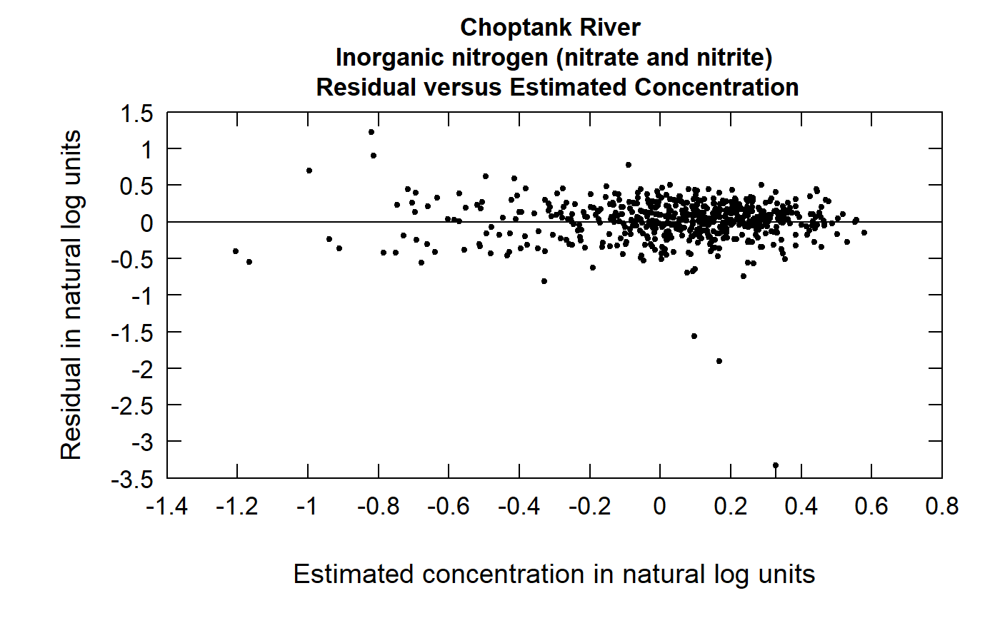
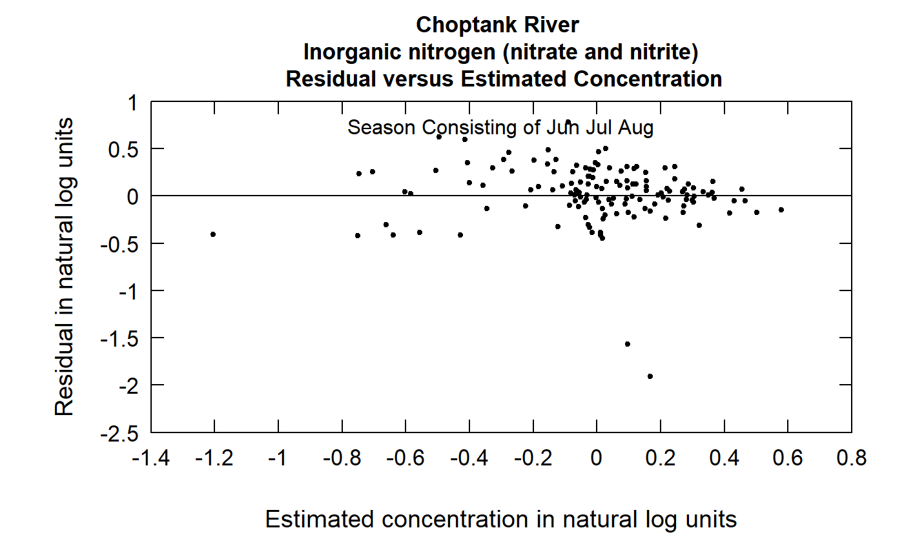

R/plotResidPred.R
plotResidPred.RdThis function produces a plot of the residuals from WRTDS, expressed in natural log concentration units versus the estimated values, also in natural log concentration units. These estimates are the log-space estimates prior to bias-correction. The function provides an alternative for viewing the standardized residuals, where the each residual is divided by its estimated standard error.
Although there are a lot of optional arguments to this function, most are set to a logical default.
Data come from named list, which contains a Sample dataframe with the sample data, and an INFO dataframe with metadata.
plotResidPred(eList, stdResid = FALSE, tinyPlot = FALSE, printTitle = TRUE, col = "black", lwd = 1, cex = 0.8, cex.axis = 1.1, cex.main = 1.1, customPar = FALSE, randomCensored = FALSE, ...)
| eList | named list with at least the Sample and INFO dataframes |
|---|---|
| stdResid | logical variable, if TRUE it uses the standardized residual, if FALSE it uses the actual, default is FALSE |
| tinyPlot | logical variable, if TRUE plot is designed to be plotted small as part of a multipart figure, default is FALSE. |
| printTitle | logical variable if TRUE title is printed, if FALSE not printed (this is best for a multi-plot figure) |
| col | color of points on plot, see ?par 'Color Specification' |
| lwd | number line width |
| cex | numerical value giving the amount by which plotting symbols should be magnified |
| cex.axis | magnification to be used for x and y labels relative to the current setting of cex |
| cex.main | magnification to be used for main titles relative to the current setting of cex |
| customPar | logical defaults to FALSE. If TRUE, par() should be set by user before calling this function (for example, adjusting margins with par(mar=c(5,5,5,5))). If customPar FALSE, EGRET chooses the best margins depending on tinyPlot. |
| randomCensored | logical. Show censored residuals as randomized. |
| … | arbitrary graphical parameters that will be passed to genericEGRETDotPlot function (see ?par for options) |
eList <- Choptank_eList # Water year: plotResidPred(eList)